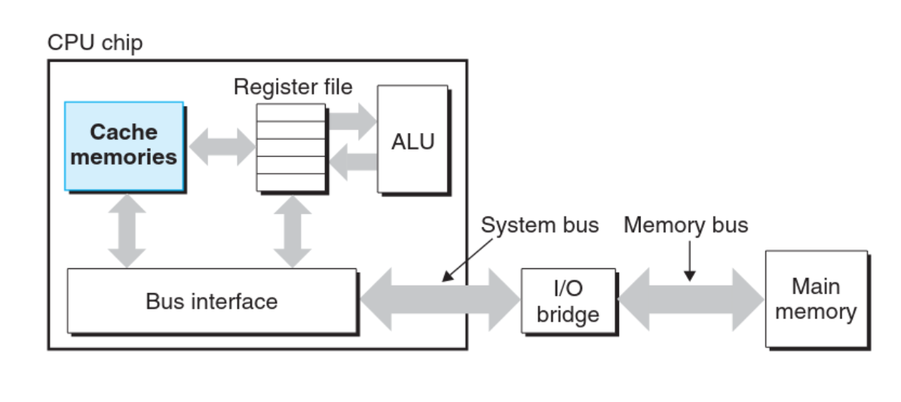

The system spends a lot of time moving information from one place to another (fetching data from disk, to main memory, to register file, to CPU and repeat). Because of this, a major goal for system designers should be to make these operations as fast as possible.
Takeaway ConceptBecause of physical laws, larger storage devices are slower than smaller ones. Reading from a register is much faster than reading from the main memory, but the register file is much smaller in size compared to the main memory.
The CPU operates at a much higher speed than the main memory, and because of that, system designers include much faster but smaller storage devices called Cache Memories that serve as temporary staging areas for information that the processor is likely to need in the near future.
Cache memory exists in different layers: an L1 cache is the smallest but fastest, larger L2 cache is slower and so on. Cache is implemented with a hardware technology known as Static Random Access Memory (SRAM) discussed earlier.
Previous Next